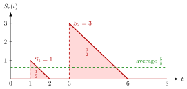

Remaining Service Time¶
Theorem¶
In a single-server queue, let be the time the job in service at time still needs, with when the server is idle. Consider the M/G/1 queue: jobs arrive as a Poisson process with rate , service times are i.i.d. copies of , and the queue is rate stable with load . If , then the time-average remaining service time, which by PASTA is also the expected remaining service time seen by an arriving job, is (Theorem 5.4.1)
Interpretation¶
An arriving job that finds the server busy is more likely to land in a long service than in a short one, because long services cover more of the time axis. This is the inspection paradox of Section 4.5, the trains seen by Mr Johnson, in a queueing setting. That is why depends on the second moment and not only on .

In Example 1, shown in the figure, jobs with service times and start at times and . During each service falls linearly from to , adding a triangle of area ; the long job contributes nine times as much. The proof of the theorem is this picture in general: the renewal reward theorem with reward per departure and departure rate gives .
The conditions each play a role. Rate stability gives . The finite second moment makes the mean triangle area finite. Poisson arrivals are only needed in the last step, where PASTA turns the time average into what arriving jobs see. Since idle periods count as , .
For exponential service times the memoryless property gives , which is why holds in the M/M/1 queue but fails for general service times. The remaining service time is the part of the workload that belongs to the job in service.
A common slip is to set the mean remaining service time of a busy server equal to ; this holds only for deterministic services. In general it equals .
Key Results¶
- Two forms. With and , .
- Busy server (Exercise 5.4.9). By PASTA a fraction of the arrivals finds the server busy, so and .
- Special cases. Exponential service (): . Deterministic service (): . Uniform service on : , so a busy server still needs on average.
- Waiting time (5.4.1). By PASTA an arrival waits , and with Little's law ; the theorem then gives the Pollaczek-Khinchine formula.
Examples¶
1. Areas on a sample path. Two jobs, with service times and , arrive at times and at an idle server, and we observe the interval . The area under is , so the time average is . The formula with the observed values, rate and mean square service , gives as well. While the server is busy, that is, during time units, the mean remaining service time is , more than half the mean service time : the long job dominates.
2. A workstation (data of Exercise 5.4.6). Jobs arrive at rate per hour, hours and , so and . Then hour. An arrival that finds the machine busy waits on average hours for the current job alone, not hour.
3. Same mean, different variability. Let per minute and minute, so . With deterministic services, and minute; a busy server still needs minute. With exponential services, and ; a busy server still needs a full mean service time of minute, as memorylessness predicts.
Prerequisites¶
- Renewal Reward Theorem
- Poisson Arrivals See Time Averages
- Rate Stability
- Workload
- Memoryless Property
Related Concepts¶
- Pollaczek-Khinchine Formula
- Batch-Arrival Waiting Time
- M/M/1 Queue
- Squared Coefficient of Variation
- Waiting Time
- N-Policy
Sources¶
- Stochastic Operations Research · Week 5
- N. D. van Foreest, Sample Path Analysis and Simulation of Stochastic Systems, Section 5.4
Aliases: residual service time, residual life of a service, mean residual service time, remaining lifetime, residual service Keywords: S_r, \mathbb{E}[S_r]=\frac{\lambda}{2}\mathbb{E}[S^2], inspection paradox, second moment of service time, triangle area S^2/2, M/G/1 queue Symbols: alpha, delta, infinity, integral, lambda, rho
Last updated: 29 October 2026 20:42
Remaining Service TimePollaczek-Khinchine FormulaRenewal Reward TheoremPoisson Arrivals See Time AveragesRate StabilityWorkloadMemoryless PropertyBatch-Arrival Waiting TimeM/M/1 QueueSquared Coefficient of VariationWaiting TimeN-Policy